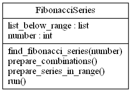

fibonacci_series¶
Class diagram¶
{kind=link}
This script is used to perform FibonacciSeries.
author: Suma Kori
e-mail: suma.kori93@gmail.com
-
class
fibonacci.fibonacci_series.FibonacciSeries(number)[source]¶ Class FibonacciSeries
The init function of the class FibonacciSeries.
:param (parsed arg) number :type str :param (class instance) list_below_range :type list
-
find_fibonacci_series(number)[source]¶ This method is used to find the series of fibonacci for the given number. This method will be called recursively.
:param number :type int
-
prepare_combinations()[source]¶ This method is used to prepare the combinations.
max_width identifies maximum values in a combinations for ex: 11, 2 occurs 5 times i,e 2,2,2,2,2,1 list_unique_values holds only unique values list_occurences holds the occurrences of fibonacci numbers in order list_fib_series holds the list of fibonacci numbers as per the occurrence list_sum_fib_numbers holds only those values whose sum matches the given number :rtype: list
-